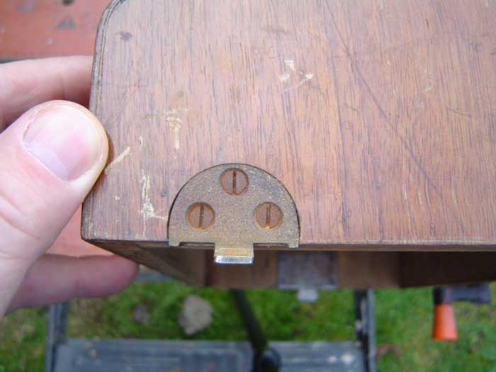
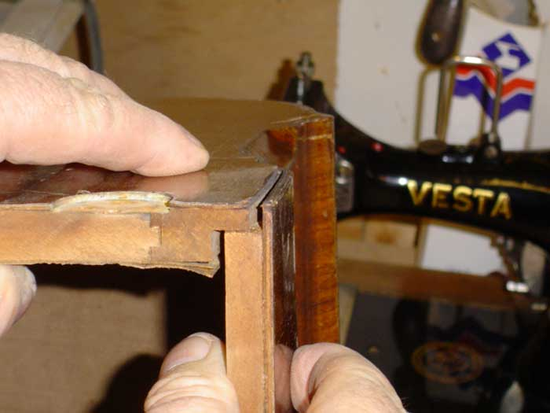
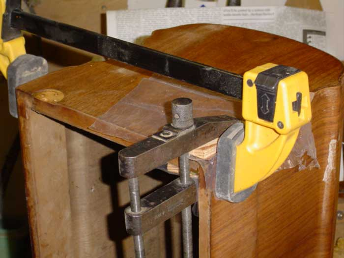
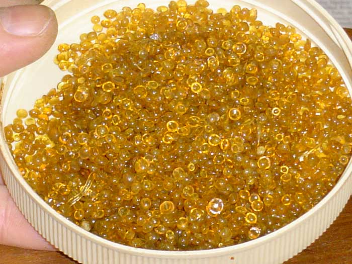
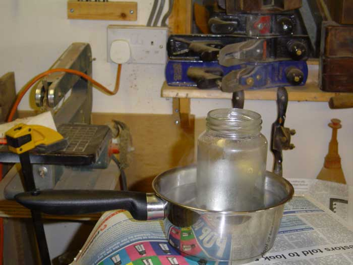
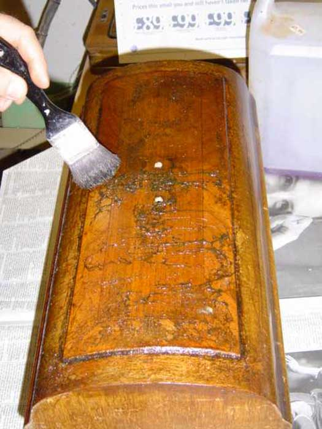
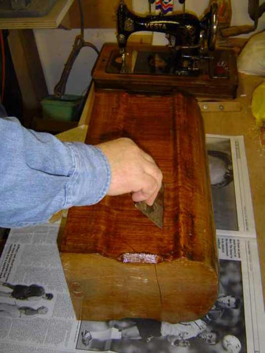
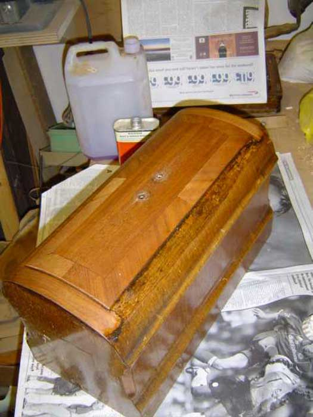
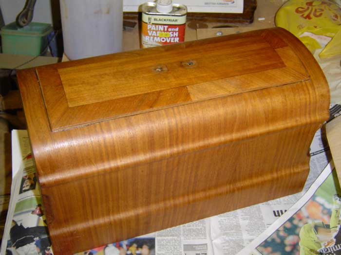

Continued........
PREPARING THE CASE FOR RESTORATION –
The first job is to remove the furniture – that’s all the bits of metal etc. – but before you do, take a good look at them –

See how the slots in those screw heads all point in the same direction? We’ve seen this before – remember the base? This feature was used by craftsmen on the better quality 18th and 19th century furniture, the screw heads on hinges, locks etc. would always be aligned in this way – it was part of the “attention to detail” that made the piece of furniture a “quality” item. The practice largely died out in this country in the second half of the 19th century, but you will find it on German sewing machines at least until the 1940s.
As I said in the last article, the secret of success in all things is attention to detail, so if you want to be a good restorer, take note of the little details – and put things back the way they were. Another small point – I always like to put each screw back into the same hole it came out of. It’s not unusual, particularly on older items, to find that screws that should all be the same size are not quite identical to each other.
Now let’s have a good look at all the joints. Oh! What have we here?

It’s coming apart at the seams! Well, perhaps that’s a slight exaggeration - but one corner’s coming apart, so we’ll have to fix that.
Whilst we’re looking at the picture, this is a good opportunity to explain something about veneer. Can you see that there’s some veneer coming away on the inside of the case? “So why did they bother to veneer it on the inside?” I hear you all ask. Well, when we glue a piece of veneer to one side of a piece of wood, the veneer is wet from the glue and has therefore expanded across its grain (remember the bit about wood expansion and contraction in the last article?). When it dries, it shrinks again, and this contraction will exert quite enough force to cause even a fairly thick piece of timber to bow over time. To prevent this from happening, it is normal to veneer both sides of the wood at the same time, thus causing the shrinkage forces to work in opposition to each other. Needless to say, whilst the veneer on the outside is cut from some attractive wood, the inside veneer can be any old rubbish – as long as it has similar expansion and contraction characteristics to the outer veneer. Take a look under one of your veneered treadle tables – you’ll find that it’s also veneered on the underside for this very reason.
Before we can re-glue the corner, we’ll have to clean out the joint as best we can. We especially need to scrape away as much of the old glue as possible. Wood glue works by being very slightly absorbed into the fibres of the wood. If the old glue is still there, it’ll act as a barrier that will prevent this absorption from taking place, thus our new glue will merely be stuck to the old glue and not the wood – and the old glue’s already failed once – so is quite likely to do so again. However, if, in conjunction with cleaning the joint well, we use glue that is identical to the original, we will achieve a good bond.
Wedge the joint open with (say) a screwdriver blade and scrape out as much as you can with whatever you can get into the gap – a knife blade; a broken hacksaw blade etc. Don’t forget to clean under that veneer – we’ll be gluing it back down as well. You’ll not be able to get at all of it, but spend a few minutes cleaning it as best you can.
Before I apply glue to a joint, I always do a “dummy run”. This is to make sure that whatever clamps etc. that I’m going to use will fit OK.

I have all sorts of fancy clamps in my workshop – scores of the little darlings – but I’m using them all the time and they’re very convenient. If I didn’t do very much woodwork, I certainly wouldn’t be spending my hard-earned money on clamps – there’s always another way to hold two bits of wood together while the glue sets – string; weights; bulldog clips; elastic bands etc., etc., etc., - be inventive! You don’t need a lot of pressure – most people who use clamps tighten them far too tight and end up squeezing the glue out of the joint again.
Just to talk you through the arrangement shown above: the large clamp with the yellow ends is holding the main joint closed; the smaller clamp is holding the veneer in place. Notice that I have put wooden blocks under the jaws of the small clamp: this is to prevent its metal jaws from marking the wood. Notice also that I have put a small piece of plastic sheet between the wood blocks and the cover: this is to prevent the blocks from becoming a permanent feature of the cover if some of the glue squeezes out!
The glue we’ll be using is pearl/hide/animal glue – whatever they call it in your part of the world. Why? Well because that’s what was used originally and because it’s a reversible process (one of the first rules of restoration). Please, please don’t go using PVA or any of the other, non-reversible, modern synthetic glues. Ethics apart, the remnants of the original glue in the fibres of the wood will prevent them adhering as well as they should, whilst new pearl glue will bond to the original hide glue.
This is what pearl glue looks like when you buy it –

Hundreds of little pearls. This is one of the oldest glues known – it’s been in use for hundreds of years and is still unsurpassed for many tasks, in particular veneering, where there’s no realistic alternative if you’re going to do a good job. It is not, however, as convenient to use as modern glues, as it requires some preparation and it has to be applied hot.
Like all worthwhile crafts, antique restoration incorporates a great many skills and techniques that have to be learned and practiced. This is what makes the difference between a skilled restorer and someone with a pot of PVA and a tin of varnish. The restorer’s motivation is a total respect for the item they’re working on rather than a need to impress the masses with how quickly they can work and how much they can make something shine. Always place ethics before ego. Let they that worship at the altar of PVA and varnish seek sustenance elsewhere – there’s nothing for them here.
Although we are now starting to use traditional materials, which require a bit of work on our part, don’t be frightened of them. We’re so used to the light coming on when we flick a switch and toothpaste coming out of a tube when we squeeze it that we expect everything to be served up on a plate for our ultimate convenience. We even have little buttons that we can press so that we don’t have to lift our fat, semi-comatose posteriors out of our armchairs to change channels on the TV! Most of these slob-building luxuries are products of recent years: our grandparents didn’t have them. Does that mean that our grandparents were so much more clever than us, thus enabling them to use more complicated products? I think not! It was just normal for them to have to use a bit of effort and they would fall about laughing at us grinding to a halt as soon as we can’t get everything out of a tube!
Pearl glue is quite easy to use – it just doesn’t come out of a tube! Most of the traditional products that we’ll be using require minimal skills that can be mastered very quickly and easily – but we can’t just open a tin and slap them on! Be patient, take the time to learn, and you’ll do a good job.
Some pearl glue sold today is still made in the traditional way – from boiling animal hides – whilst some is supposedly produced synthetically, to stop the cat lovers from going into a decline. I have used both and can detect no difference whatsoever between them: they even smell the same - absolutely terrible - so I wouldn’t worry which you’re getting. The only version to avoid is the one sold under a very well known trade name that claims to be “cold hide glue”, and – yes, you’ve guessed it – comes out of a tube!
The pearl glue you buy will have instructions - follow them. In most cases, it’ll be something to the effect of covering the pearls with cold water overnight, then throwing that water away, covering the pearls with fresh water and heating in a glue kettle. Now a glue kettle’s an expensive bit of kit and you really don’t need one unless you’re using pearl glue all the time. I don’t own one (too mean with my money!). All they are is a means of heating the glue indirectly, using hot water. Below is a picture of how I do it.

Put the pearls with just a covering of water into a clean jar, stand it in a saucepan of water, and heat it (don’t boil it). If you have a camping stove or something similar, which would allow you to do this outside of the house, this would be a definite advantage, as the stuff has a smell reminiscent of a dead rat lying on the heating pipes under the floorboards!
As the pearls dissolve into the water, we will heat it to the point where, if you dip a small brush into the glue and lift it out again, the glue runs off in a thin, smooth, creamy flow – not in blobs and not like water. You may need to adjust the temperature or add either a few more pearls or a little more water to achieve this. Once it’s ready, remove the saucepan from the heat and take it to where you’re working. Use a small brush to apply the glue to the required surfaces – try to work fairly quickly – wipe away any excess with a damp cloth and clamp/weight/tie it all up. Working in a warm place will help the glue to not cool too quickly until you’re finished. You can buy special glue brushes, but it’s not worth it for this small a job – any small brush or even a small, flat stick will do to get the glue into the joint. Leave it for a few hours (overnight is ideal) and remove the clamps. There – that wasn’t too bad, was it?
STRIPPING THE OLD FINISH –
Here we go then, guys and gals, time to get your hands dirty: if you get your hair and your boots dirty as well, you’re working too quickly. You may have noticed that the photograph of the head of the machine was taken on a table set up outside my workshop door (grass in the background etc.). My intention was to prove that this is actually a viable “kitchen table” job and does not need to be done in a fancy workshop. I called “match abandoned” after about two minutes – it was early March in the fens and it was too darn cold! I retired to my (heated) workshop – but I could have done it outside if I wasn’t such a wimp!
One very important thing to say to you at this point – don’t ever try to remove the old finish by sanding it off! That veneer is very thin – typically about one millimetre – and the old finish won’t have a consistent hardness or thickness over the whole of its surface, so if you try to sand it off, you’ll be through the veneer in some places before you’re through the varnish in others! Result – one scrap sewing machine cover! You’ve been warned!
So let’s start removing the original finish. I’m going to use a good quality paint and varnish stripper. I’m not going to use one of those green, eco-friendly, new-age, water-based ones that are safe to feed to babies and hamsters, ‘cos they’re rubbish. Read the instructions on the tin: if it tells you to neutralise it with water, put it right back on the shelf. What you’re looking for is one where the instructions either tell you to neutralise it with methylated spirits (de-natured alcohol), or that it’s self-neutralising (in which case, we’ll still use alcohol, ‘cos I never trust that “self-neutralising” bit!).
We’re going to strip the case a bit at a time – the bits being the top, the two sides and the two ends – i.e., five bits. Varnish stripper can do a lot of damage if it gets onto things that you didn’t want it to – and that includes your skin - so let’s have plenty of old newspapers, old clothes, rubber gloves and eye shields. If you see a picture of me doing this work without wearing the necessary protection – don’t do as I do - do as I say.

STEP ONE – BRUSHING THE STRIPPER -
Many of you will have used chemical stripper on paint. It works much, much more quickly on shellac, so the minutes of waiting-time associated with paint become seconds when you’re stripping shellac.
This is the way that I apply the stripper. I chose a fairly small area (in this case, just the top) and paint it, fairly thickly, over the whole area. Don’t try to economise with stripper – slap it on pretty thickly – but not so thickly that it starts to run down the sides. I then work across the same area, stabbing with the brush in a stippling action.
In the picture above, I’ve painted the whole of the top and have stippled the front half. Can you see how the stippling is lifting the shellac away from the wood? That gunge on the surface is the dissolved shellac coming away.
CHECKING FOR UNDERSTANDING – Gunge - an alternative expression to the one I’d actually use, were I not in polite company.
STEP TWO – SCRAPING -

OK – so how come I’m suddenly working on the side of the cover instead of the top? Well don’t go worrying your pretty little heads about the minor details – just look at what I’m doing. I’m pulling that scraper towards me (I’m standing to the left of the picture; no more clues) – dragging it rather than pushing it – just the opposite of the action you’d use if you were stripping paint. Note also that I’m scraping, as much as possible, in the direction in which the wood grain is running. The sole objective of this stage of the process is to remove as much of that gunge as possible, so after each stroke, wipe the edge of your scraper clean with a piece of newspaper.
You may also be wondering why my scraper doesn’t have a handle. The answer is simple – I’m far too tight-fisted with my cash to buy them, so, having a metal-cutting guillotine in my workshop, I scrounge old disposable-type wood saws that other folks are throwing out and cut up the blades on the guillotine to make scrapers. Cheap, or what!
STEP THREE – WIRE WOOL –
Once the scraping has removed all the shellac, I take some fairly course wire wool, pour some stripper onto it and scrub the surface (not too hard). This is mainly to remove the last remaining traces of gunge and should be done pretty quickly after step two, as the gunge has an annoying habit of setting again. If any of it does set, simply apply more stripper to it using your wire wool and scrub it off straight away. Don’t try to economise on wire wool – when it starts to clag up (good old fenland expression there) throw it away and get a fresh piece.
Once ALL the gunge has been removed, it should look something like this -

This shows you what it should look like after you’ve wire wooled off the last of the gunge. Just compare the top with the side, which hasn’t been worked on yet. Starting to look pretty darn good, eh?
You’re going to repeat steps one to three on the remaining “bits” - the two sides and the two ends – complete each “bit” before starting the next.
STEP FOUR – NEUTRALISING THE STRIPPER –
All this involves is using our fairly course wire wool again, but this time dipped in methylated spirits (de-natured alcohol) and, once again, working in the direction of the grain. This should remove every last visible trace of the shellac and stripper gunge. As soon as the whole thing looks really clean, give it a really good scrub over with some methylated spirits (de-natured alcohol) on a cloth, to get rid of the invisible traces and neutralise the last of the stripper. You should now have something like this –

Now we’re getting somewhere! This is where all the hard work starts to feel worthwhile. Let the job dry-off for a few minutes, then on to step five.